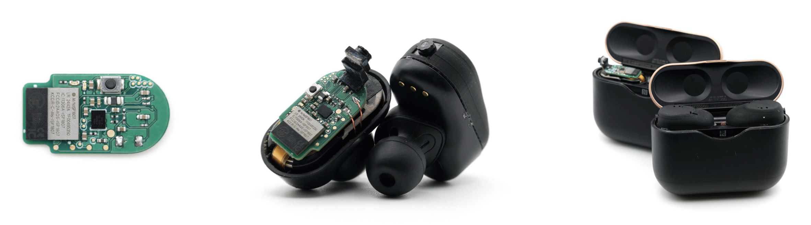

VueBuds
UW Mobile Intelligence Lab RA project: camera-integrated wireless earbuds that stream ear-level video to on-device vision–language models for hands-free visual questions—the same VueBuds / earbuds arc as my resume (BLE imaging pipeline, dual-camera UART tooling, Python automation). Honorable Mention, CHI ’26. Paper (PDF)